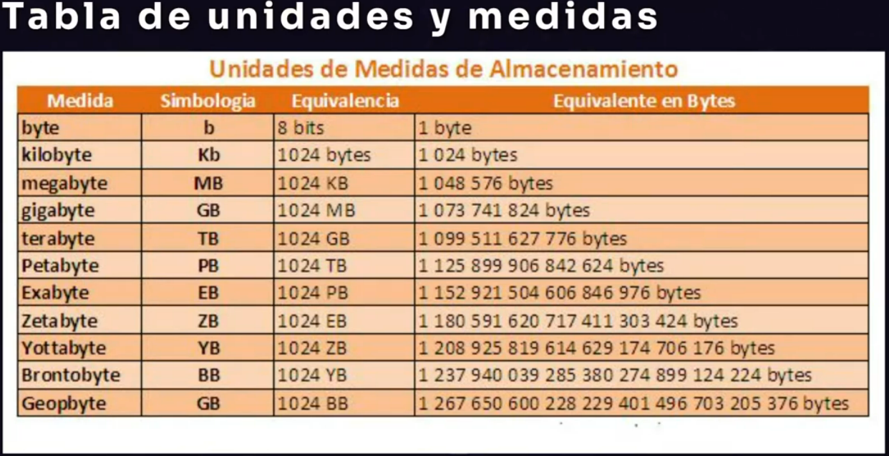
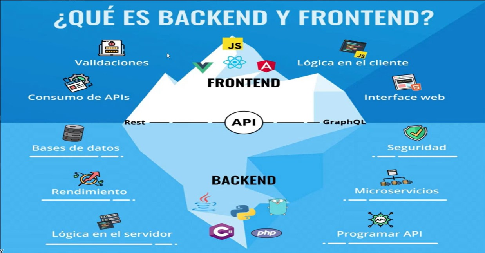
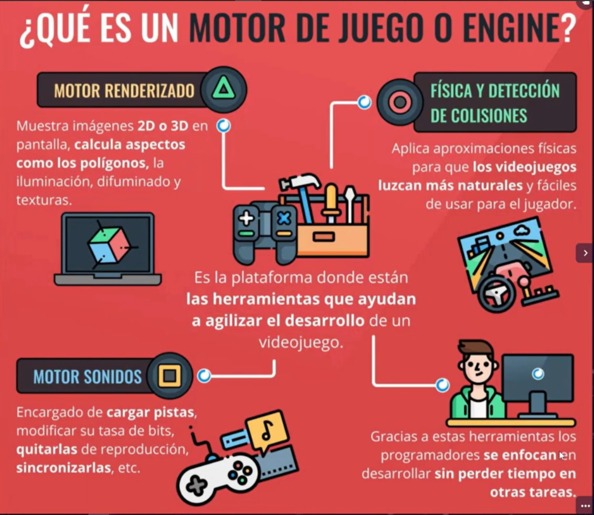
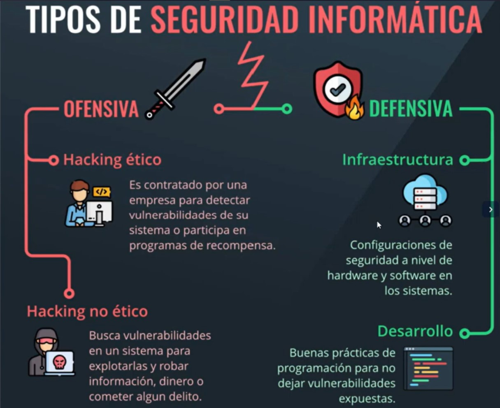
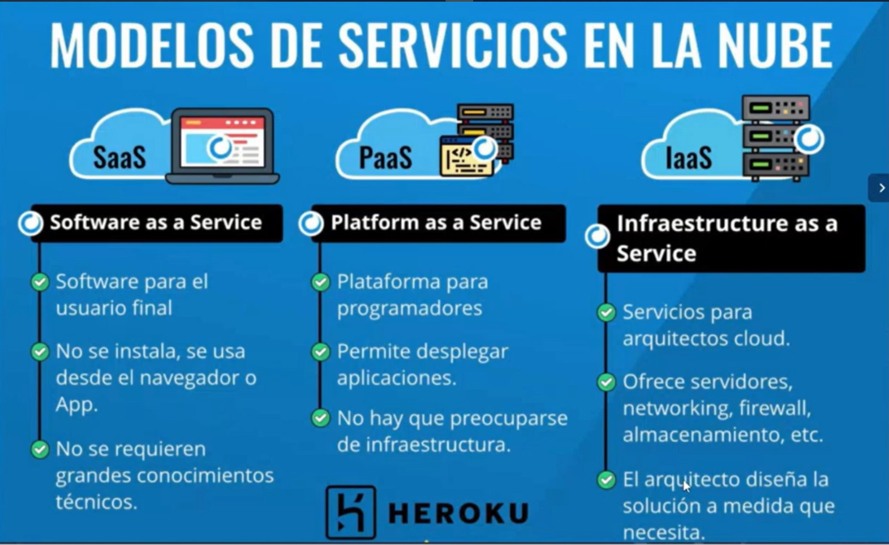
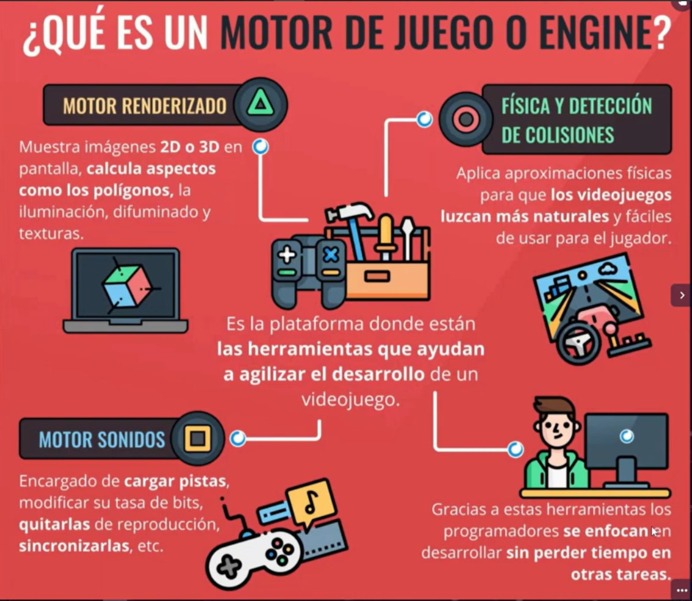
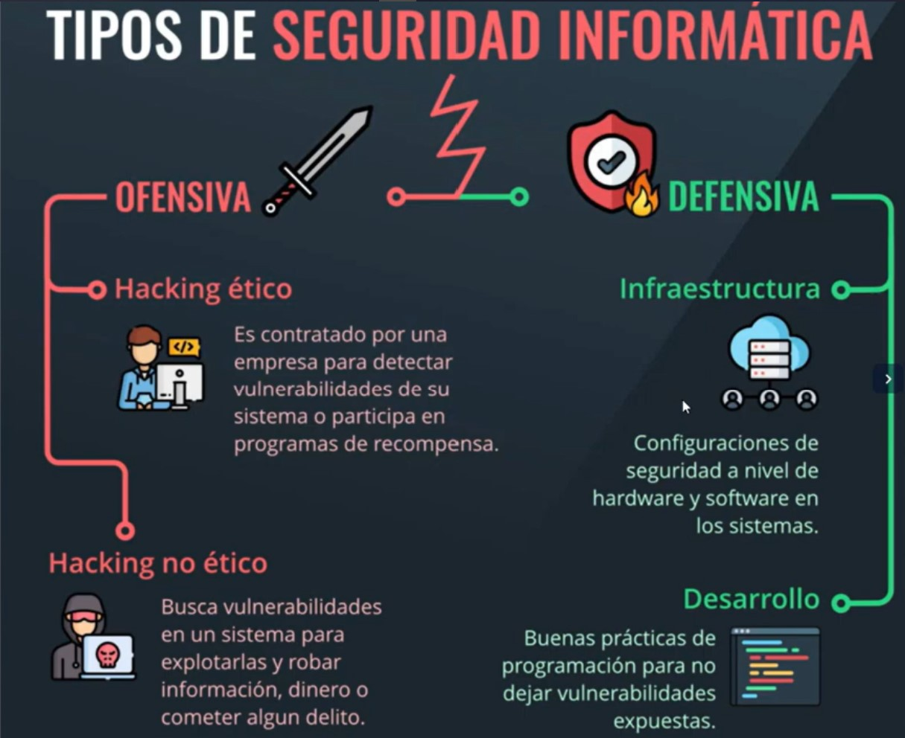
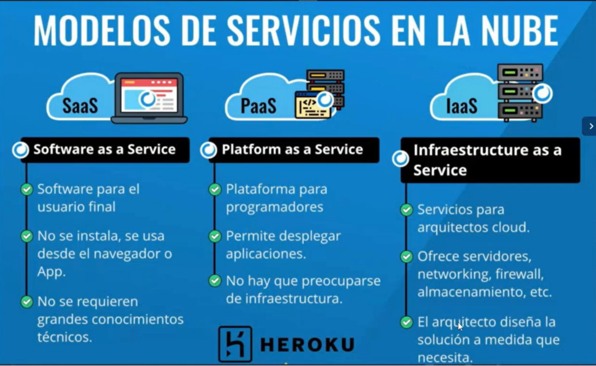

¿Por qué son importantes los fundamentos de programación?
Fundamento se refiere al origen, conocimientos bases métodos y herramientas
No se necesita experiencia, pero si conocer conceptos y herramientas.
Objetivos de los fundamentos.
Proporciona familiaridad con los conceptos básicos de construcción de
programas para computadores que son comunes en la mayoria de los lenguajes
de programación.
¿QUE ES UN PROGRAMA?
Es una secuancia de instrucciones.
Las instrucciones del programa se desarrollan en el procesador central.
todo el conjunto de instrucciones se encuentran encaminadas para dar solucion a
un problema o tarea en especifico.
sistema estructurado de comunicación.
lespermite a las personas o programador dar instrucciones especificas al dispositivo
a travez del software, con la finalidad de lograr determinados objetivos.
QUE ES UN LENGUAJE DE PROGRAMACION.
Son lenguajes que comunican al hombre con la maquinay los sistemas digitales,
exiten variedades de lenguajes de programacion que todo profecional
de ingenieria en sistemas y areas a fines debe dominar como java,python,SCala,y Rust,
entre otros.
Sistemas binarios:
ES uno de los sistemas que se usan en las computadorasbasado en un sitema
numérico binario, en donde solo hay dos estados posibles:apagado y encendido,
generalmente simbolizados por 0 y 1.
Este cero y uno se denomina bit se le define como la minima unidad de informacion.
La base del sistema binario es 1024, se conoce entonces una tabla de unidades y medidas.

Frond-end o Analizador
Se encarga de realizar el analisis del codigo fuente a compilar
lo valida e interactua con el usuario, suele ser independiente de la
plataforma de trabajo.
Back-end o Generador
Es la parte del compilador que apartir de los resultados del analisis
se encarga de generar el codigo para la maquina segun la plataforma
especifica.
Fases del analisis de un compilador
*Análisis léxico.
Reconocimiento de los elementos del lenguaje agrupados en componentes
llamados tokens.
*Analisis sintatico.
los componentes lexicos se agrupan gerargicamente en frases gramaticales
para analizar su extructura con reglas y patrones especificos.
*Análisis semantico
se utiliza la extructura gerargica determinada por la fase de analisis
sintatico para identificar eventuales errores semanticos.
*Generacion del codigo intermedio.
despues de las fases de analisis se genera una representacion de codigo
intermedio para una maquina abstracta.
*Optimizacion del codigo
se mejora la representacion del codigo intermedio para obtener un codigo.
LENGUAJES COMPILADOS
Traductores que generan codigo de maquina apartir de un codigo fuente.
LENGUAJES INTERPRETADOS
Ejecutores del paso a paso del codigo fuente, donde no se lleva acabo una
traduccion y preejecucio.
CONCLUCION:
Los programas compilados a codigo nativo en tiempo de compilacion tienden
a ser mas rapidos que los traducidos en tiempo de ejecucio, debido a la sobrecarga
del proceso de traduccion. Sin embargo, las nuevas tecnologias con la compilacion en
tiempo de ejecucion, y mejoras generales en el proceso de traduccion estan
empezando a reducir esta brecha. En algun punto intermedio, tiende a ser mas eficiente
la solucion mixta usando BYTECODE.
LENGUAJES INTERPRETADOS
En ciencias de la computacion, interprete o interpretador es un programa informatico
capaz de analizar y ejecutar otros programas, los interpretes se diferencian de los compiladores
o de los ensambladores en que mientras estos traducen un programa desde su descripcion
en un lenguaje de programacion al codigo maquina del sistema,los interpretes solo realizan
la traduccion a medida de que sea necesaria,típicamente, instruccion por instruccion y normalmente
no guardan el resultado de dicha traduccion.
DESARROLLO WEB

1. 💻 Desarrollo web
La web es todo lo que se puede ejecutar en un navegador. ¿Y qué es un navegador?
Son programas como Chrome, Opera, Microsoft Edge que nos permiten acceder a
sitios como Twitter, Facebook, YouTube, Slack, etc.
Podríamos dividir el desarrollo web en 2 partes:
1. Sitios web: Son solo páginas web informativas. Su función es meramente informar
al usuario, sea sobre un negocio, escuela, etc. Se puede utilizar un CMS como
WordPress para crearlos.
2. Aplicaciones web: Es una aplicación completa y contiene una lógica compleja, por
ejemplo: YouTube es una aplicación web, se pueden realizar funciones como
guardar vídeos, crear una transmisión, marcar favoritos, etc.
El desarrollo web se podría divide en backend y frontend. De manera simple
podemos decir que el backend es la parte se encarga del lado del servidor (No es
visible), y el frontend se encarga del lado del cliente(Lo puedes observar desde tu
pantalla).
En esta infografía puedes ver de todo lo que se encarga el Backend y Frontend en
una aplicación
DESARROLLO MOVIL
El desarrollo móvil es simples palabras es crear aplicaciones para teléfonos y estas
pueden funcionar en 2 sistemas operativos: Android de Google y iOS de Apple.
En Android puedes desarrollar con lenguajes como Kotlin o Java, mientras que en
IOS está Swift. A este tipo de aplicaciones se les conoce como "aplicaciones
nativas", ya que se desarrollan específicamente en un sistema, esto quiere decir
que no van a funcionar en el otro, habría que crear otra aplicación para ello. Esto
puede suponer un costo excesivo para las empresas, ya que habría que hacer 2
aplicaciones.
Pero, ¿qué otras alternativas existen?
1. Aplicaciones multiplataforma: En este tipo de aplicaciones solo se necesita
desarrollar una sola vez para funcionar en Android o iOS. Se pueden hacer
con React Native, Ionic, Xamarin o Flutter.
2. Progressive Web Apps: Son aplicaciones intermedias entre web y móviles, que
simulan la experiencia de una aplicación nativa. Por ejemplo la aplicación de
EDteam para móviles es una PWA
 DESARROLLO VIDEOJUEGOS
Ya todos los conocemos, tienen sus propias consolas, están en móviles, en
ordenadores y consolas. Su mundo es enorme, hay diseñadores, storytelling,
modelado de personajes. Entre los motores más importantes que puedes usar para
desarrollar videojuegos se encuentran, Unity 3D que utiliza C# y Unreal Engine que
usa C++

DESARROLLO REALIDAD VIRTUAL Y AUMENTADA
La realidad virtual es una inmersión total, se suele utilizar un casco o lentes que
ocupa toda tu visión, y con ello puedes transportarte a un mundo de ensueño, hay
proyectos muy conocidos como Beat Saber y Half-Life: Alyx.
Mientras que la realidad aumentada combina nuestra realidad con la virtual, un
ejemplo de ello es Pokémon GO o los filtros de Snapchat. ¿Y como funciona? Es
muy simple, solo se necesita un dispositivo que permita observar el entorno, y con
este mismo agregarle ese añadido, por ejemplo con la cámara del teléfono que
puedes añadir efectos para las stories. Esta tecnología se puede trabajar con varios
lenguajes, tales como C#, Java, Javascript, Python, entre otros.
Cabe mencionar que esta tecnología no está enfocada solamente en el
entretenimiento, sino que se puede aplicar en áreas como la educación, medicina,
mecánica, etc. Anteriormente existieron proyectos como Google Glass, que no
despegó tanto como se esperaba y por su parte Microsoft sacó HoloLens
DESARROLLO APLICACIONES DE ESCRITORIO
Son aplicaciones que se instalan directamente en tu sistema operativo de
computadora sea Windows,Linux, Mac OS, por ejemplo: Adobe Premier, Office, un
editor de código, un IDE. Para desarrollar este tipo de aplicaciones se pueden
utilizar lenguajes como Java, C#, Python.
DESARROLLO SISTEMAS OPERATIVOS/EMDEDIDOS
Los sistemas operativos son justamente Windows, Linux, Android o IOS, es la capa
más baja de software que se comunica directamente con el hardware. Se suelen
usar lenguajes como Ensamblador o C para desarrollarlos.
Mientras que los sistemas embebidos son programas electrónicos que realizan pocas
funciones y están diseñados para cubrir necesidades específicas, casi siempre van
directamente en un chip; por ejemplo: las operaciones de una lavadora, un
refrigerador o algún otro electrodoméstico.
Principalmente se desarrollan con Java o C. También se relaciona con temas como
Arduino, IoT, Raspberry, que se pueden programar con lenguajes como Python y
Javascript.
SEGURIDAD INFORMATICA
La seguridad informática es tarea de todos, tanto de los programadores como de
los administradores de sistemas, y aunque no lo parezca el usuario como tal es el
eslabón más débil. Por su parte la seguridad informática se puede clasificar en 2
áreas:
¿Cuáles lenguajes necesitas conocer para entrar en el mundo de la seguridad
informática? Principalmente Python, ya que te permite automatizar procesos, por
ejemplo podrías crear un script automático que recorra un sitio para buscar
vulnerabilidades. También es bueno conocer sobre C, bash y los lenguajes en que
están basados las aplicaciones que vas a auditar, asimismo SQL para las bases de
datos

MACHINE LEARNING
Básicamente consiste en enseñarle a las computadores a través de enormes
volúmenes de datos, El papel de los programadores en este ámbito es crear los
modelos, es decir la secuencia de pasos para que en Machine learning se pueda
crear algo, y así encontrar patrones para poder predecir una acción a futuro, por
ejemplo: en Netflix los usuarios reciben recomendaciones en base a las
películas/series que observaron previamente.
De igual manera se podría hacer un
análisis de sentimientos en marketing, para conocer que tan a gusto se sienten los
usuarios con 'x' servicio, para así poder fidelizarlos. Los 2 lenguajes más
importantes en el Machine learning son Python y R.
CLOUD COMPUTING
La nube es una red mundial de servidores que ofrecen servicios de
almacenamiento, bases de datos, redes, software, análisis e inteligencia a través de
internet. Esto les permite a las empresas y usuarios pagar solamente por lo que
usan, lo cual realmente es un beneficio enorme. Ya que no tienen que adquirir
equipos caros y todo lo que conllevan, sino que por un pago menor pueden optar
hasta por una supercomputadora

DESARROLLO VIDEOJUEGOS
Ya todos los conocemos, tienen sus propias consolas, están en móviles, en
ordenadores y consolas. Su mundo es enorme, hay diseñadores, storytelling,
modelado de personajes. Entre los motores más importantes que puedes usar para
desarrollar videojuegos se encuentran, Unity 3D que utiliza C# y Unreal Engine que
usa C++

DESARROLLO REALIDAD VIRTUAL Y AUMENTADA
La realidad virtual es una inmersión total, se suele utilizar un casco o lentes que
ocupa toda tu visión, y con ello puedes transportarte a un mundo de ensueño, hay
proyectos muy conocidos como Beat Saber y Half-Life: Alyx.
Mientras que la realidad aumentada combina nuestra realidad con la virtual, un
ejemplo de ello es Pokémon GO o los filtros de Snapchat. ¿Y como funciona? Es
muy simple, solo se necesita un dispositivo que permita observar el entorno, y con
este mismo agregarle ese añadido, por ejemplo con la cámara del teléfono que
puedes añadir efectos para las stories. Esta tecnología se puede trabajar con varios
lenguajes, tales como C#, Java, Javascript, Python, entre otros.
Cabe mencionar que esta tecnología no está enfocada solamente en el
entretenimiento, sino que se puede aplicar en áreas como la educación, medicina,
mecánica, etc. Anteriormente existieron proyectos como Google Glass, que no
despegó tanto como se esperaba y por su parte Microsoft sacó HoloLens
DESARROLLO APLICACIONES DE ESCRITORIO
Son aplicaciones que se instalan directamente en tu sistema operativo de
computadora sea Windows,Linux, Mac OS, por ejemplo: Adobe Premier, Office, un
editor de código, un IDE. Para desarrollar este tipo de aplicaciones se pueden
utilizar lenguajes como Java, C#, Python.
DESARROLLO SISTEMAS OPERATIVOS/EMDEDIDOS
Los sistemas operativos son justamente Windows, Linux, Android o IOS, es la capa
más baja de software que se comunica directamente con el hardware. Se suelen
usar lenguajes como Ensamblador o C para desarrollarlos.
Mientras que los sistemas embebidos son programas electrónicos que realizan pocas
funciones y están diseñados para cubrir necesidades específicas, casi siempre van
directamente en un chip; por ejemplo: las operaciones de una lavadora, un
refrigerador o algún otro electrodoméstico.
Principalmente se desarrollan con Java o C. También se relaciona con temas como
Arduino, IoT, Raspberry, que se pueden programar con lenguajes como Python y
Javascript.
SEGURIDAD INFORMATICA
La seguridad informática es tarea de todos, tanto de los programadores como de
los administradores de sistemas, y aunque no lo parezca el usuario como tal es el
eslabón más débil. Por su parte la seguridad informática se puede clasificar en 2
áreas:
¿Cuáles lenguajes necesitas conocer para entrar en el mundo de la seguridad
informática? Principalmente Python, ya que te permite automatizar procesos, por
ejemplo podrías crear un script automático que recorra un sitio para buscar
vulnerabilidades. También es bueno conocer sobre C, bash y los lenguajes en que
están basados las aplicaciones que vas a auditar, asimismo SQL para las bases de
datos

MACHINE LEARNING
Básicamente consiste en enseñarle a las computadores a través de enormes
volúmenes de datos, El papel de los programadores en este ámbito es crear los
modelos, es decir la secuencia de pasos para que en Machine learning se pueda
crear algo, y así encontrar patrones para poder predecir una acción a futuro, por
ejemplo: en Netflix los usuarios reciben recomendaciones en base a las
películas/series que observaron previamente.
De igual manera se podría hacer un
análisis de sentimientos en marketing, para conocer que tan a gusto se sienten los
usuarios con 'x' servicio, para así poder fidelizarlos. Los 2 lenguajes más
importantes en el Machine learning son Python y R.
CLOUD COMPUTING
La nube es una red mundial de servidores que ofrecen servicios de
almacenamiento, bases de datos, redes, software, análisis e inteligencia a través de
internet. Esto les permite a las empresas y usuarios pagar solamente por lo que
usan, lo cual realmente es un beneficio enorme. Ya que no tienen que adquirir
equipos caros y todo lo que conllevan, sino que por un pago menor pueden optar
hasta por una supercomputadora

IDE Y DATOS
Integrated Development Environment (Entorno de Desarrollo Integrado)
Entorno de desarrollo integrado
Desarrollo de plaicaciones Web (DAW)
Desarrolo de aplicaciones multiplataforma(DAM)
Hacen que la tarea de programar sea mas sencilla
COMPONENTES DE UN IDE
EDITOR DE FUENTE/CODIGO:
Editor de texto para trabajar en el codigo fuente de programas
informatico.
COMPILADOR
Encargado de traducir las instracciones en codigo fuente,
escritas en lenguaje de programacion.
DEPURADOR
Programa que permite probar y encontrar errores.
REFACTORIZACION DE CODIGO:
Proceso en el que se recurre como el reformateo
para mejorar el codigo fuente.
EJEMPLO DE IDE
ECLIPCE:Entorno de desarrolo multiplataforma, desarrollado por IBM
NETBEANS:Permite programar adroid con plugis,manejo automatico de la memoria
VISUAL STUDIO CODE:Dupurar errores
DATOS Y CONSTANTES:
DATOS
Datos son representaciones simbolicas
Sepueden representar en terminos de numeros (Enteros/Reales),Letras
o elementos alfabeticos,elementos logicos.
DATOS VARIABLES
Entendiendo que variable es todo aquello que cambia, tecnicamente es una pocicion de memoria
donde se almacena informacion o datos.
DATOS CONSTANTES
A diferencia de la variable un dato constante no varia durante todo el programa,
las constantes no se modifican.
TIPOS DE DATOS
CARACTERES
Digitos individuales que se pueden representar mediante datos
numericos (0-9),letras (a-z)u otros simbolos .(Especiales).
NUMERICOS
Pueden ser numeros Reales o enteros,Dependiendo de lo necesario.
BOOLEANOS
Representa valores logicos, como verdadero y falso.
FECHAS
Es un dato escecial donde almacena el calendario real
de acuerdo al formato inclusive nos puede indicar el dia de la semana.
DEFINICION DE VARIABLES:
Comienzan con una letra
No deben tener espacion en blanco
No pueden tener caracteres Especiales
preferiblemente en minisculas ya que pueden existir
lenguajes que las direfencien
Deben estar precedidas del signo igual
Los textos van entre comillas con valor o sin valor.
Los numeros se inician en cero para los enteros o 0.0 para los reales.
Las contantes no modifican su valor.
Se recomienda que se definan variables alusivas al tema.
Cuando se realizan procesos o existan variables que hagan
algo diferente es importante documentar para que el compilador
no lo tenga en cuenta.
El comentario se coloca // o /* xxxx*/ En mas de una line de comandos.
BUSQUEDA LINEAL
Es un metodo simple y facil de implementar para encontrar
elementos especificos de una lista o arreglos de datos.
Busca un valor especifico de forma ordenada y secuancial.
EJEMPLO
def busqueda_lineal(lista,elemento):
for i in range(len(lista)):
if lista[i]==elemento:
return i #retorno del indice
return -1 #Si el elemento no esta en la lista.
#Ejemplo con lista de numeros
numeros =[4,2,5,6,8,9]
elemento_buscado= 2
resultado=busqueda_lineal(numeros,elemento_buscado)
if resultado =! -1:
print(f"El elemento buscado {elemento_buscado} se encuentra en el indice {resultado}")
else:
print(f"El elemento{elemento_buscado} no se encuentra en la lista")
BUSQUEDA BINARIA
Algoritmo de busqueda eficiente, aplicado a listas ordenadas divide repetidamente la lista a la mitad
reduciendo el numero de elementos a revisar.
def busqueda_binaria(lista,elemento):
low=0
high=len(lista) -1
while low <= high:
mid=(low-high)//2
if lista[mid]==elemento:
return mid
elif lista[mid] < elemento:
else:
high ==mid -1
return -1
lista_ordenada=[1,2,3,4,5,6,7,8,9,10]
elemento_buscado=7
resultado=buscaqueda(lista_ordenada,elemento_buscado)
if resultado = -1
print(f"El elemento {elemento_buscado} se encuentra en el indice{resultado}")
else:
print(f"El elemento {elemento_buscado} no esta en la lista")
BUSQUEDA POR INTERPOLACION
Es un algoritmo de busqueda de elementos en listas ordenadas
de manera eficiente; utilizando la estimacion basada en la
distribucion uniforme de los valores en la lista.
def busqueda_interpolacion(lista,elemento):
low=0
high=len(lista) - 1
while low <= high and lista[low] <= elemento <=lista[high]
# formula de interpolacion para busqueda binaria
pos= low + (elemento-lista[low]* (hig-low))//(lista[higt]-lista[low])
if lista[pos]==elemento:
return pos
elif lista[pos]BUSQUEDA ARBOLES BINARIOS
1.Comenzar en la raiz del ARBOLES
2.Comparar el elemento con el valor en el nodo actual.
3.si el valor es menor ,buscar en el subarbol derecho.
EJEMPLO :
class nodoABB
def_init_(self,valor):
self.valor=valor
self.izquierda=none
self.derecha=none
def busqueda_abb(nodo,elemento)
if nodo is none or novo.valor==elemento:
return nodo
# Si el valor es menor que el nodo actual, busca en el subárbol izquierdo
if valor < nodo.valor:
return buscar(nodo.izquierda, valor)
# Si el valor es mayor, busca en el subárbol derecho
return buscar(nodo.derecha, valor)
# Ejemplo de uso:
# Construcción del árbol binario de búsqueda
raiz = Nodo(15)
raiz.izquierda = Nodo(10)
raiz.derecha = Nodo(20)
raiz.izquierda.izquierda = Nodo(8)
raiz.izquierda.derecha = Nodo(12)
raiz.derecha.izquierda = Nodo(17)
raiz.derecha.derecha = Nodo(25)
# Buscando el valor 12
resultado = buscar(raiz, 12)
if resultado:
print("Valor encontrado:", resultado.valor)
else:
print("Valor no encontrado")
ORDENAMIENTO POR BURBUJA
Recorre la lista de valores a ordenar , compara dos valores. si los dos elementos
estan bien ordenados continua de lo contrario mueve el mas grande al final.
se repite el proceso hasta ordenar todo el arreglo.
def busq(lista):
n=len(lista)
for i in range(n):
for j in range(0,n-i-1):
if lista[j] > lista[j+1]:
lista[j] ,lista[j+1]=lista[j+1],lista[j]
return lista
lista=[1,4,6,8,0,4,67,8,13,4,6,78,33,43,33,2221,11,1,1,1,1,1,2,3,3,4,5,6,]
lista_ordenada=busq(lista)
print(lista_ordenada)
ORDENAMIENTO POR INSERCION
Construye una lista ordenada de un elemento a la vez, en donde
desplaza elementos mas grandes hacia la derecha mientras se muestra su
lugar correcto.
*Para listas pequeñas o parcialmente ordenadas.
*menos oficiente que otros algoritmos.
def lista_ordenada(arr):
n=len(lista)
for i in range(n):
clave = lista[i]
j=i-1
while j>=1 and lista[j]>clave:
lista[j+1]=lista[j]
j-=1
lista[j+1]=clave
for i in range(n):
print(lista[i])
lista=[2,3,5,7,2]
resultado=lista_ordenada(lista)
ORDENAMIENTO POR SELECCION
def selection_sort(arr):
n = len(arr)
for i in range(n):
min_idx = i
for j in range(i + 1, n):
if arr[j] < arr[min_idx]:
min_idx = j
arr[i], arr[min_idx] = arr[min_idx], arr[i]
return arr
# Ejemplo de uso
arreglo = [64, 25, 12, 22, 11]
print("Arreglo original:", arreglo)
resultado = selection_sort(arreglo.copy())
print("Arreglo ordenado:", resultado)
ORDENAMIENTO POR MERGE SORT
- Eficiente
- Enfoque "Divide y venceras"
- Dividir
def merge_sort(arr):
if len(arr) <= 1:
return arr
mid = len(arr) // 2
left = merge_sort(arr[:mid])
right = merge_sort(arr[mid:])
return merge(left, right)
def merge(left, right):
result = []
i = j = 0
while i < len(left) and j < len(right):
if left[i] < right[j]:
result.append(left[i])
i += 1
else:
result.append(right[j])
j += 1
return result + left[i:] + right[j:]
# Ejemplo de uso
arreglo = [38, 27, 43, 3, 9, 82, 10]
print("Original:", arreglo)
print("Ordenado:", merge_sort(arreglo))

 INICIO:MODULO 1
INICIO:MODULO 1